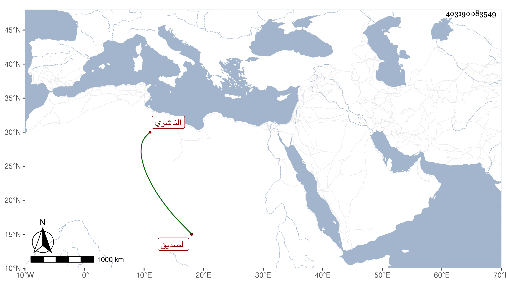

0902Sakhawi.DawLamic.ITO20230111-ara1.EIS1600.403190083549
Biography ID: 403190083549
119
عبد الحميد بن عثمان بن محمد بن عبد الله بن عمر بن أبي بكر بن عمر ابن عبد الرحمن بن عبد الله رضي الدين أبو بكر الصديق الناشري . تفقه بأبيه وعمه الطيب والجمال محمد بن أبي الغيث الكمراني والموفق بن فخر ، وقرأ الحساب على يوسف العامري والعربية على الشرف إسماعيل اليومة وناب في الأحكام بالمهجم عن أبيه ثم استقل بها بعده ، وكان محسدا . مات بها في رمضان سنة أربع وأربعين .
